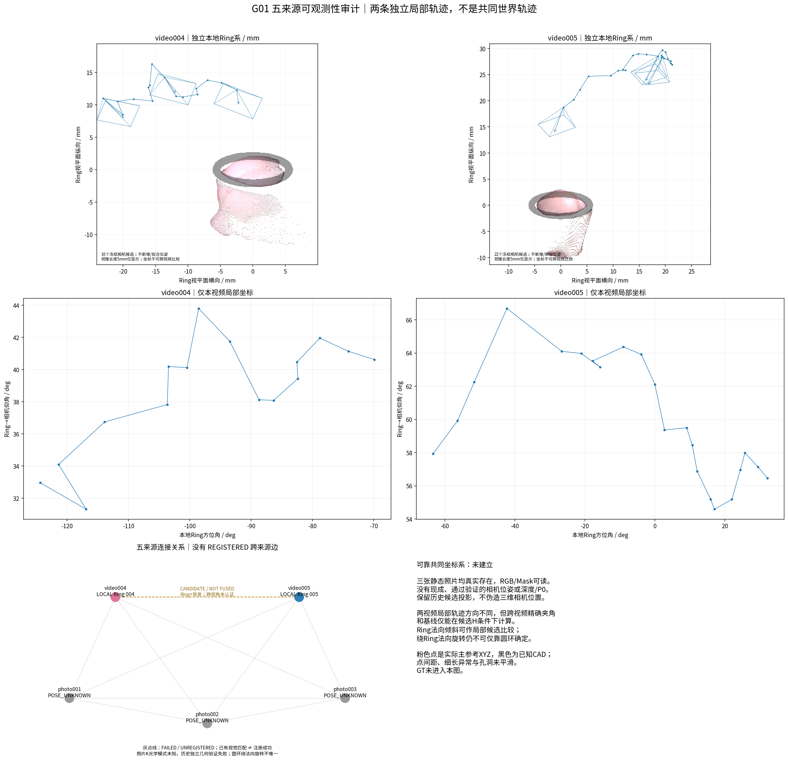
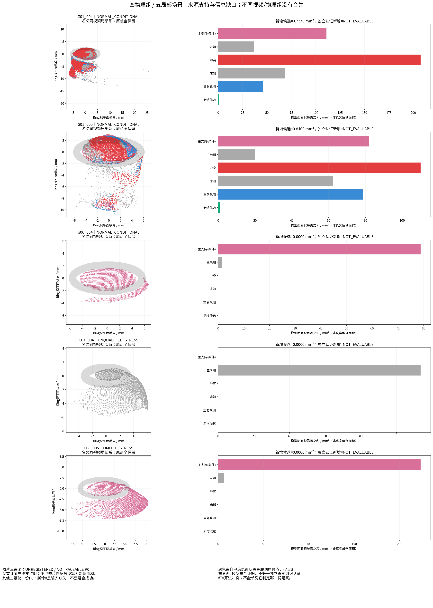
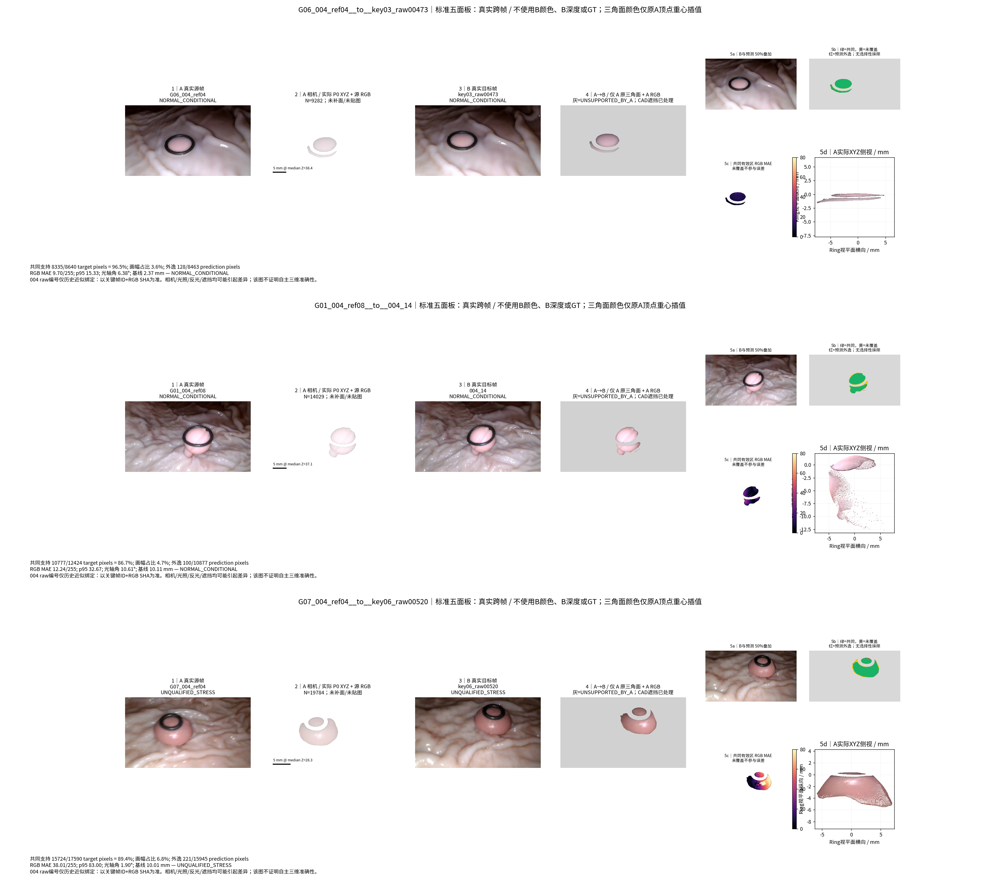
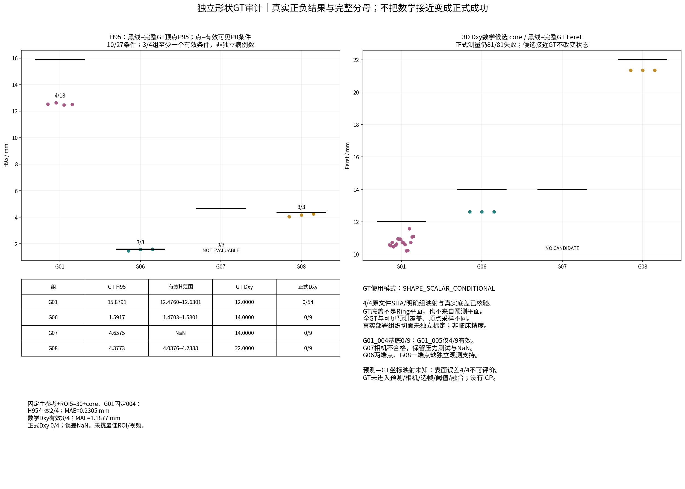

G01_camera_view_coverage.png

REPORTED / DIAGNOSTIC ONLY；GT形状条件评价，未认证自主几何；22完整A→B，失败保留。






FROZEN_CAMERA_CONDITIONAL；共同支持 12654/13769；MAE 22.47/255。实际射线结果NPZ（LOCAL_ONLY）

FROZEN_CAMERA_CONDITIONAL；共同支持 12635/14543；MAE 29.64/255。实际射线结果NPZ（LOCAL_ONLY）

FROZEN_CAMERA_CONDITIONAL；共同支持 10777/12424；MAE 12.24/255。实际射线结果NPZ（LOCAL_ONLY）

FROZEN_CAMERA_CONDITIONAL；共同支持 12852/14543；MAE 14.83/255。实际射线结果NPZ（LOCAL_ONLY）

FROZEN_CAMERA_CONDITIONAL；共同支持 12328/13769；MAE 18.60/255。实际射线结果NPZ（LOCAL_ONLY）

FROZEN_CAMERA_CONDITIONAL；共同支持 12926/14543；MAE 13.64/255。实际射线结果NPZ（LOCAL_ONLY）

FROZEN_CAMERA_CONDITIONAL；共同支持 15487/16385；MAE 19.98/255。实际射线结果NPZ（LOCAL_ONLY）

FROZEN_CAMERA_CONDITIONAL；共同支持 10993/12656；MAE 32.41/255。实际射线结果NPZ（LOCAL_ONLY）

FROZEN_CAMERA_CONDITIONAL；共同支持 12972/14844；MAE 25.10/255。实际射线结果NPZ（LOCAL_ONLY）

FROZEN_CAMERA_CONDITIONAL；共同支持 11445/12656；MAE 5.48/255。实际射线结果NPZ（LOCAL_ONLY）

FROZEN_CAMERA_CONDITIONAL；共同支持 11424/12656；MAE 22.28/255。实际射线结果NPZ（LOCAL_ONLY）

FROZEN_CAMERA_CONDITIONAL；共同支持 8335/8640；MAE 9.70/255。实际射线结果NPZ（LOCAL_ONLY）

UNQUALIFIED_CAMERA_STRESS；共同支持 15724/17590；MAE 38.01/255。实际射线结果NPZ（LOCAL_ONLY）

FROZEN_CAMERA_CONDITIONAL；共同支持 17551/18057；MAE 15.20/255。实际射线结果NPZ（LOCAL_ONLY）

CANDIDATE_ONLY；共同支持 11008/12656；MAE 21.04/255。实际射线结果NPZ（LOCAL_ONLY）

CANDIDATE_ONLY；共同支持 9256/14543；MAE 21.05/255。实际射线结果NPZ（LOCAL_ONLY）

CANDIDATE_ONLY；共同支持 15623/18269；MAE 12.62/255。实际射线结果NPZ（LOCAL_ONLY）

CANDIDATE_ONLY；共同支持 15420/18124；MAE 22.99/255。实际射线结果NPZ（LOCAL_ONLY）

CANDIDATE_ONLY；共同支持 17040/23486；MAE 21.24/255。实际射线结果NPZ（LOCAL_ONLY）

CANDIDATE_ONLY；共同支持 13180/18269；MAE 25.34/255。实际射线结果NPZ（LOCAL_ONLY）

CANDIDATE_ONLY；共同支持 16276/18124；MAE 14.44/255。实际射线结果NPZ（LOCAL_ONLY）

CANDIDATE_ONLY；共同支持 12831/23486；MAE 26.85/255。实际射线结果NPZ（LOCAL_ONLY）